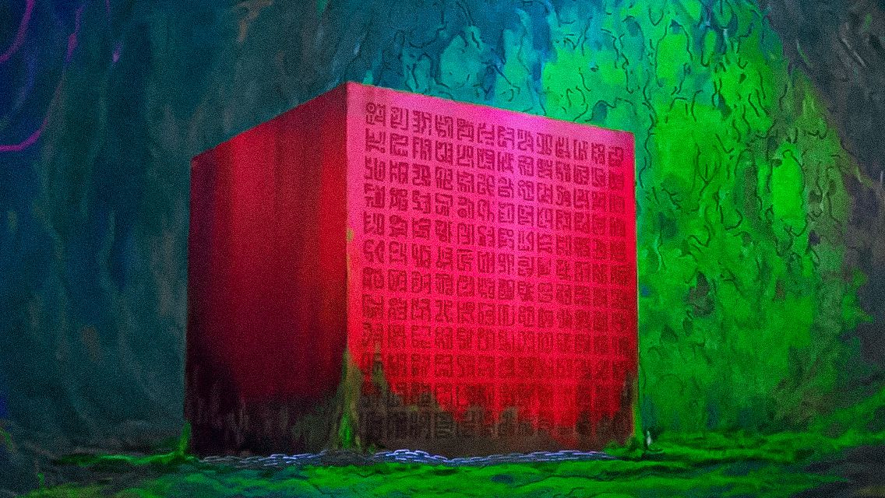
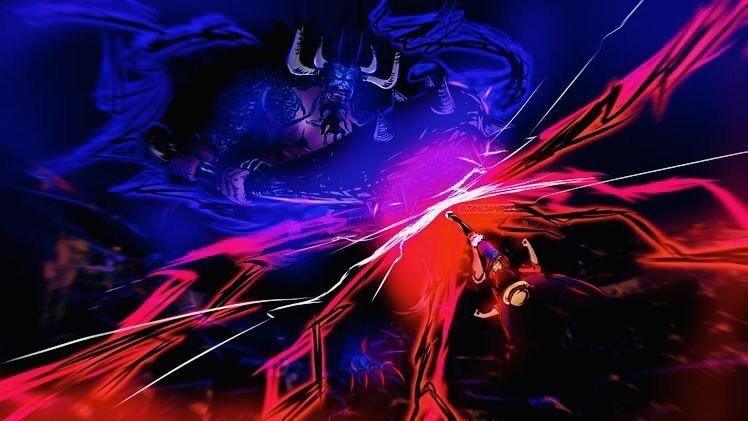
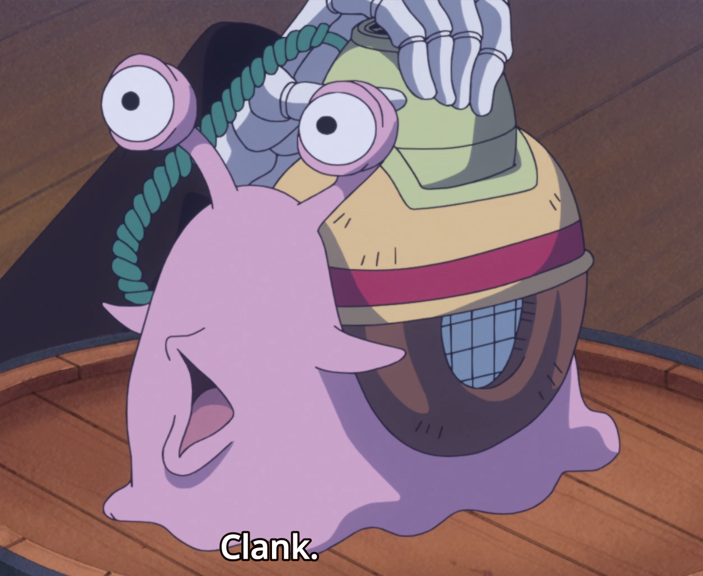
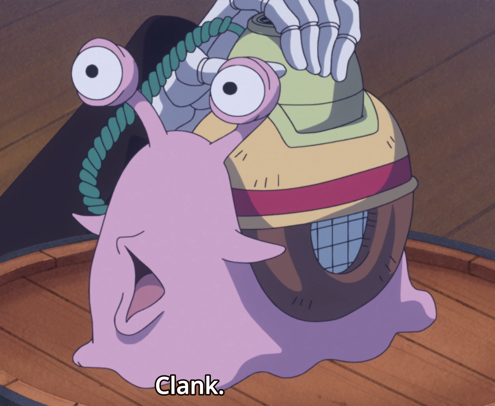

1. HTML Structure (Poneglyphs):
In the world of web development, the HTML structure of a webpage is like the ancient Poneglyphs scattered
across the Grand Line. Just as these ancient inscriptions reveal hidden knowledge, inspecting the HTML
structure unveils the layout and content of a web page.

2. CSS Styles (Dials):
CSS styles are like the Dials found on the Sky Island of Skypiea. Dials have various properties and
functions, just like CSS rules can change the appearance and behavior of web elements. Inspecting CSS styles
allows you to see how styles are applied and tweak them to customize the page's appearance.
3. JavaScript (Devil Fruits)
JavaScript in web development is akin to Devil Fruits in the One Piece world. Both grant extraordinary
abilities. With JavaScript, you can add interactivity and dynamic behavior to a webpage. Using the console
in DevTools is like harnessing the power of a Devil Fruit to manipulate and control elements on the page.
4. Console (Haki)
The console is your Haki ability, allowing you to sense and interact with the underlying code. You can use
it to log messages, run scripts, and debug errors. Just as Haki reveals hidden intentions and emotions in
One Piece, the console reveals what's happening behind the scenes on a web page.

5. Network Monitoring (Log Pose)
Network monitoring is similar to a Log Pose, guiding you through the turbulent waters of the internet. It
records all network requests made by a webpage, much like a Log Pose tracks magnetic islands in the Grand
Line. You can inspect requests, check response data, and ensure smooth navigation.
6. Performance Profiling (Vivre Card)
Profiling webpage performance is akin to creating a Vivre Card for your website. It helps you understand the
strengths and weaknesses of your site, just as Vivre Cards provide insight into the whereabouts and status
of characters in the One Piece world.
 7. Device Emulation (Den Den Mushi)
Device emulation allows you to mimic different devices and screen sizes for responsive design testing. It's
like using a Den Den Mushi to communicate across the vast seas, ensuring your site functions well on various
devices.

8. Security Auditing (Seastone)
Security auditing is your Seastone handcuffs, safeguarding your website from vulnerabilities. It helps you
identify and address security issues, ensuring your site is well-protected from malicious attacks.
9. Audits (Bounty System)
Audits in DevTools are akin to the Bounty System in One Piece. They evaluate your site's performance,
accessibility, and best practices. Just as pirates aim to increase their bounties, web developers strive to
improve their site's audit scores.
So, when you navigate through the web's Grand Line, remember that the "Inspect Element" tool is your trusty
Log Pose, guiding you to uncover hidden treasures and navigate the complex world of web development.
7. Device Emulation (Den Den Mushi)
Device emulation allows you to mimic different devices and screen sizes for responsive design testing. It's
like using a Den Den Mushi to communicate across the vast seas, ensuring your site functions well on various
devices.

8. Security Auditing (Seastone)
Security auditing is your Seastone handcuffs, safeguarding your website from vulnerabilities. It helps you
identify and address security issues, ensuring your site is well-protected from malicious attacks.
9. Audits (Bounty System)
Audits in DevTools are akin to the Bounty System in One Piece. They evaluate your site's performance,
accessibility, and best practices. Just as pirates aim to increase their bounties, web developers strive to
improve their site's audit scores.
So, when you navigate through the web's Grand Line, remember that the "Inspect Element" tool is your trusty
Log Pose, guiding you to uncover hidden treasures and navigate the complex world of web development.